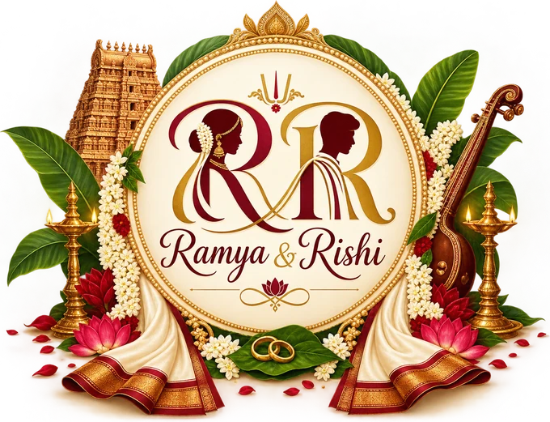
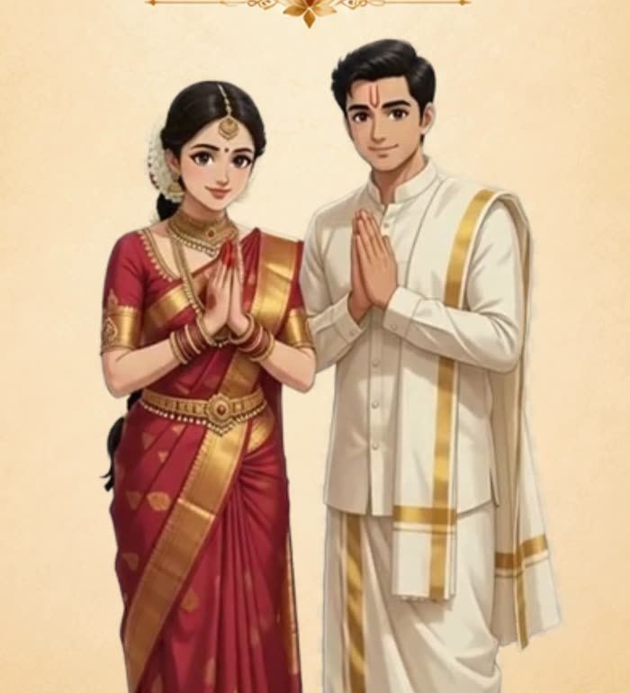

Our story
&
Tap to openScroll
॥ ஸ்ரீ கணேசாய நம ॥
With the blessings of our families
&
are getting married
Every celebration here carries the love of two families who have prayed for this day far longer than we have.
ನಮ್ಮ ಕುಟುಂಬಗಳ ಆಶೀರ್ವಾದದೊಂದಿಗೆ
ಇಲ್ಲಿನ ಪ್ರತಿಯೊಂದು ಸಂಭ್ರಮವೂ, ಈ ದಿನಕ್ಕಾಗಿ ನಮಗಿಂತಲೂ ಬಹಳ ಹಿಂದಿನಿಂದ ಪ್ರಾರ್ಥಿಸಿದ ಎರಡು ಕುಟುಂಬಗಳ ಪ್ರೀತಿಯನ್ನು ಹೊತ್ತಿದೆ.
ಪುತ್ರಿ
ಶ್ರೀ ಶ್ರೀನಿವಾಸನ್ ಅಯ್ಯರ್ ಮತ್ತು ಶ್ರೀಮತಿ ಲಕ್ಷ್ಮಿ ಶ್ರೀನಿವಾಸನ್
ಪುತ್ರ
ಶ್ರೀ ವೆಂಕಟೇಶ್ ರಾಮನ್ ಮತ್ತು ಶ್ರೀಮತಿ ಮೀನಾಕ್ಷಿ ವೆಂಕಟೇಶ್

The two of us

&
Four days of celebration
Our Wedding Journey
Four celebrations. Two families. One forever.
Let us celebrate
Haldi
Date
Time
Venue
You are invited
Sangeet
Date
Time
Venue
You are invited to our
Reception
Date
Time
Venue
Moments before forever
Where it all happens
Every one of the four ceremonies is held here, so you only need to find it once.
Until we say “I do”
Will you celebrate with us?
Your presence would make our celebrations even more special. Please reply by .
Thank you
From this day forward
Two hearts.Two families.One beautiful forever.
&
With love, laughter & blessings — we cannot wait to celebrate with you.